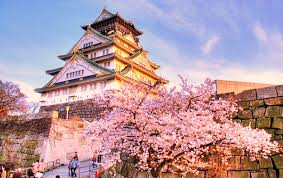

Xây dựng năm 1600, lâu đài Kumamoto là một điểm tham quan không thể bỏ qua của thành phố Kumamoto. Đây là một trong ba tòa lâu đài lớn nhất ở nước Nhật...

Núi Phú Sĩ
Một trong những biểu tượng nổi tiếng nhất Nhật Bản, Phú Sĩ là ngọn núi cao nhất và là một trong “Ba núi Thánh” của quốc gia. Ngọn núi lửa vẫn hoạt động...
Lâu đài Kumamoto
Xây dựng năm 1600, lâu đài Kumamoto là một điểm tham quan không thể bỏ qua của thành phố Kumamoto. Đây là một trong ba tòa lâu đài lớn nhất ở nước Nhật...